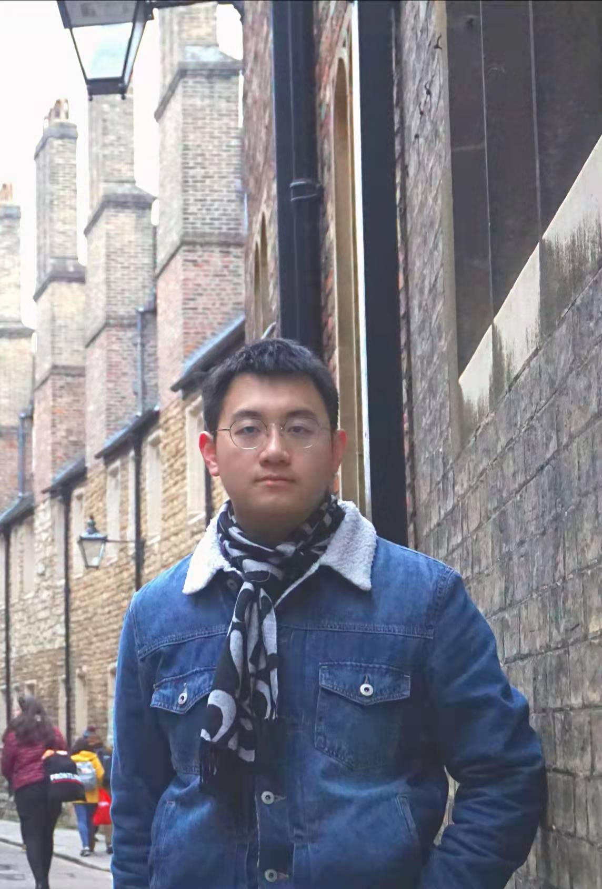

About Me
Hi! My name is Yanjun Chen. I am currently a first-year graduate student at the University of Michigan School of Information, where I am working towards a Master of Science in Information with a focus on Data Science and Analytics. I graduated from Shanghai Jiao Tong University in August 2021 with a Bachelor's degree in Electrical and Computer Engineering. I love travelling and trying out food from different cultures. In this blog, I will introduce to you
My Story
I was born and raised in Shanghai, China. As you may know, China has a vast territory. In the past five years, I've been to different cities in China with my friends. In 2019, I went to Europe and travelled to cities all around Spain and Portugal. I spent 3 months in England as an exchange student at the University of Warwick in 2020. Last year, I came to the US as a graduate student at UMSI. Being exposed to different cultures, I've been lucky enough to use my camera to document the foods I've tried all over the world.